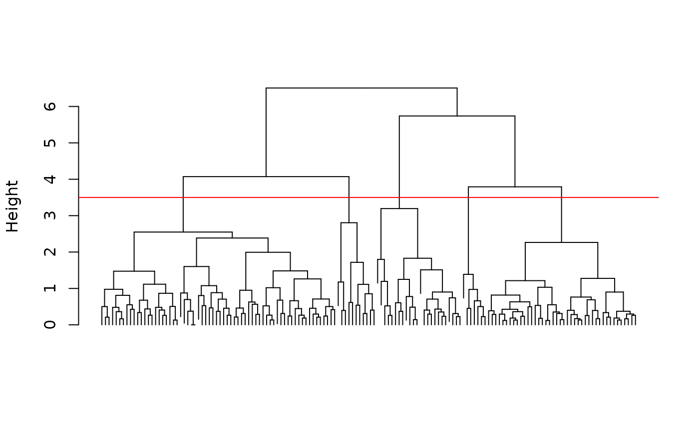
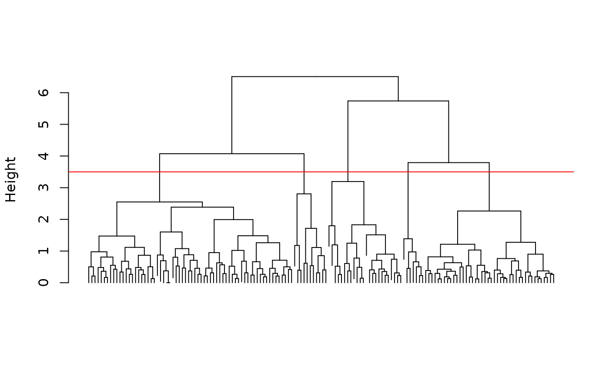

Hierarchical clustering is an agglomerative method that uses a dissimilarity matrix to group individuals. It is represented by a dendrogram that can be cut at a certain level to form the final clusters.
cluster(x, ...)
# S3 method for default
cluster(x, ...)
# S3 method for dist
cluster(x, method = "complete", fun = NULL, ...)
# S3 method for Cluster
str(object, max.level = NA, digits.d = 3L, ...)
# S3 method for Cluster
labels(object, ...)
# S3 method for Cluster
nobs(object, ...)
# S3 method for Cluster
predict(object, k = NULL, h = NULL, ...)
# S3 method for Cluster
augment(x, data, k = NULL, h = NULL, ...)
# S3 method for Cluster
plot(
x,
y,
labels = TRUE,
hang = -1,
check = TRUE,
type = "vertical",
lab = "Height",
...
)
# S3 method for Cluster
autoplot(
object,
labels = TRUE,
type = "vertical",
circ.text.size = 3,
theme = theme_sciviews(),
xlab = "",
ylab = "Height",
...
)
# S3 method for Cluster
chart(data, ..., type = NULL, env = parent.frame())Arguments
- x
A
Dissimilarityobject.- ...
Further arguments for the methods (see their respective manpages).
- method
The agglomeration method used.
"complete"by default. Other options depend on the functionfun =used. For the default one, you can also use"single","average","mcquitty","ward.D","ward.D2","centroid", or"median".- fun
The function to use to do the calculation. By default, it is
fastcluster::hclust(), an fast and memory-optimized version of the default R functionstats::hclust(). You can also useflashClust::hclust(),cluster::agnes(),cluster::diana(), as well as, any other function that returns anhclustobject, or something convertible tohclustwithas.hclust(). The default (NULL) means that the fastcluster implementation is used.- object
A
clusterobject.- max.level
The maximum level to present.
- digits.d
The number of digits to print.
- k
The number of clusters to get.
- h
The height where the dendrogram should be cut (give either
k =orh =, but not both at the same time).- data
The original dataset
- y
Do not use it.
- labels
Should we show the labels (
TRUEby default).- hang
The fraction of the plot height at which labels should hang below (by default, -1 meaning labels are all placed at the extreme of the plot).
- check
The validity of the
clusterobject is verified first to avoid crashing R. You can put it atFALSEto speed up computation if you are really sure your object is valid.- type
The type of dendrogram, by default,
"vertical". It could also be"horizontal"(more readable when there are many observations), or"circular"(even more readable with many observations, but more difficult to chose the cutting level).- lab
The label of the y axis (vertical) or x axis (horizontal), by default
"Height".- circ.text.size
Size of the text for a circular dendrogram
- theme
The ggplot2 theme to use, by default, it is
theme_sciviews().- xlab
Label of the x axis (nothing by default)
- ylab
Label of the y axis, by default
"Height".- env
The environment where to evaluate formulas. If you don't understand this, it means you should not touch it!
Value
A Cluster object inheriting from hclust. Specific methods are: str() (compact display of the object content), labels() (get the labels for the observations), nobs() (number of observations), predict() (get the clusters, given a cutting level), augment() (add the groups to the original data frame or tibble), plot() (create a dendrogram as base R plot), autoplot() (create a dendrogram as a ggplot2), and chart() (create a dendrogram as a chart variant of a ggplot2).
See also
Examples
SciViews::R
iris <- read("iris", package = "datasets")
iris_num <- select(iris, -species) # Only numeric columns from iris
# Cluster the 150 flowers
iris_dis <- dissimilarity(iris_num, method = "euclidean", scale = TRUE)
(iris_clust <- cluster(iris_dis, method = "complete"))
#>
#> Call:
#> cluster.dist(x = iris_dis, method = "complete")
#>
#> Cluster method : complete
#> Distance : euclidean
#> Number of objects: 150
#>
str(iris_clust) # More useful
#> --[dendrogram w/ 2 branches and 150 members at h = 6.51]
#> |--[dendrogram w/ 2 branches and 77 members at h = 4.07]
#> | |--[dendrogram w/ 2 branches and 66 members at h = 2.55]
#> | | |--[dendrogram w/ 2 branches and 22 members at h = 1.47]
#> | | | |--[dendrogram w/ 2 branches and 10 members at h = 0.977]
#> | | | | |--[dendrogram w/ 2 branches and 3 members at h = 0.502]
#> | | | | | |--leaf "101"
#> | | | | | `--[dendrogram w/ 2 branches and 2 members at h = 0.211]
#> | | | | | |--leaf "137"
#> | | | | | `--leaf "149"
#> | | | | `--[dendrogram w/ 2 branches and 7 members at h = 0.81]
#> | | | | |--[dendrogram w/ 2 branches and 4 members at h = 0.481]
#> | | | | | |--leaf "145"
#> | | | | | `--[dendrogram w/ 2 branches and 3 members at h = 0.362]
#> | | | | | |--leaf "141"
#> | | | | | `--[dendrogram w/ 2 branches and 2 members at h = 0.166]
#> | | | | | |--leaf "121"
#> | | | | | `--leaf "144"
#> | | | | `--[dendrogram w/ 2 branches and 3 members at h = 0.551]
#> | | | | |--leaf "125"
#> | | | | `--[dendrogram w/ 2 branches and 2 members at h = 0.427]
#> | | | | |--leaf "111"
#> | | | | `--leaf "116"
#> | | | `--[dendrogram w/ 2 branches and 12 members at h = 1.12]
#> | | | |--[dendrogram w/ 2 branches and 5 members at h = 0.678]
#> | | | | |--[dendrogram w/ 2 branches and 2 members at h = 0.338]
#> | | | | | |--leaf "142"
#> | | | | | `--leaf "146"
#> | | | | `--[dendrogram w/ 2 branches and 3 members at h = 0.437]
#> | | | | |--leaf "103"
#> | | | | `--[dendrogram w/ 2 branches and 2 members at h = 0.265]
#> | | | | |--leaf "113"
#> | | | | `--leaf "140"
#> | | | `--[dendrogram w/ 2 branches and 7 members at h = 0.867]
#> | | | |--[dendrogram w/ 2 branches and 4 members at h = 0.481]
#> | | | | |--leaf "104"
#> | | | | `--[dendrogram w/ 2 branches and 3 members at h = 0.406]
#> | | | | |--leaf "148"
#> | | | | `--[dendrogram w/ 2 branches and 2 members at h = 0.259]
#> | | | | |--leaf "117"
#> | | | | `--leaf "138"
#> | | | `--[dendrogram w/ 2 branches and 3 members at h = 0.505]
#> | | | |--leaf "105"
#> | | | `--[dendrogram w/ 2 branches and 2 members at h = 0.131]
#> | | | |--leaf "129"
#> | | | `--leaf "133"
#> | | `--[dendrogram w/ 2 branches and 44 members at h = 2.39]
#> | | |--[dendrogram w/ 2 branches and 15 members at h = 1.6]
#> | | | |--[dendrogram w/ 2 branches and 5 members at h = 0.876]
#> | | | | |--leaf "114"
#> | | | | `--[dendrogram w/ 2 branches and 4 members at h = 0.695]
#> | | | | |--leaf "115"
#> | | | | `--[dendrogram w/ 2 branches and 3 members at h = 0.376]
#> | | | | |--leaf "122"
#> | | | | `--[dendrogram w/ 2 branches and 2 members at h = 0]
#> | | | | |--leaf "102"
#> | | | | `--leaf "143"
#> | | | `--[dendrogram w/ 2 branches and 10 members at h = 1.08]
#> | | | |--[dendrogram w/ 2 branches and 3 members at h = 0.805]
#> | | | | |--leaf "109"
#> | | | | `--[dendrogram w/ 2 branches and 2 members at h = 0.528]
#> | | | | |--leaf "73"
#> | | | | `--leaf "147"
#> | | | `--[dendrogram w/ 2 branches and 7 members at h = 0.884]
#> | | | |--[dendrogram w/ 2 branches and 2 members at h = 0.465]
#> | | | | |--leaf "84"
#> | | | | `--leaf "135"
#> | | | `--[dendrogram w/ 2 branches and 5 members at h = 0.707]
#> | | | |--[dendrogram w/ 2 branches and 2 members at h = 0.372]
#> | | | | |--leaf "55"
#> | | | | `--leaf "134"
#> | | | `--[dendrogram w/ 2 branches and 3 members at h = 0.457]
#> | | | |--leaf "112"
#> | | | `--[dendrogram w/ 2 branches and 2 members at h = 0.265]
#> | | | |--leaf "124"
#> | | | `--leaf "127"
#> | | `--[dendrogram w/ 2 branches and 29 members at h = 1.99]
#> | | |--[dendrogram w/ 2 branches and 8 members at h = 0.951]
#> | | | |--[dendrogram w/ 2 branches and 4 members at h = 0.461]
#> | | | | |--[dendrogram w/ 2 branches and 2 members at h = 0.215]
#> | | | | | |--leaf "66"
#> | | | | | `--leaf "87"
#> | | | | `--[dendrogram w/ 2 branches and 2 members at h = 0.312]
#> | | | | |--leaf "51"
#> | | | | `--leaf "53"
#> | | | `--[dendrogram w/ 2 branches and 4 members at h = 0.628]
#> | | | |--leaf "78"
#> | | | `--[dendrogram w/ 2 branches and 3 members at h = 0.566]
#> | | | |--leaf "77"
#> | | | `--[dendrogram w/ 2 branches and 2 members at h = 0.288]
#> | | | |--leaf "59"
#> | | | `--leaf "76"
#> | | `--[dendrogram w/ 2 branches and 21 members at h = 1.48]
#> | | |--[dendrogram w/ 2 branches and 7 members at h = 1.02]
#> | | | |--[dendrogram w/ 2 branches and 4 members at h = 0.522]
#> | | | | |--leaf "71"
#> | | | | `--[dendrogram w/ 2 branches and 3 members at h = 0.267]
#> | | | | |--leaf "150"
#> | | | | `--[dendrogram w/ 2 branches and 2 members at h = 0.133]
#> | | | | |--leaf "128"
#> | | | | `--leaf "139"
#> | | | `--[dendrogram w/ 2 branches and 3 members at h = 0.679]
#> | | | |--leaf "86"
#> | | | `--[dendrogram w/ 2 branches and 2 members at h = 0.312]
#> | | | |--leaf "52"
#> | | | `--leaf "57"
#> | | `--[dendrogram w/ 2 branches and 14 members at h = 1.26]
#> | | |--[dendrogram w/ 2 branches and 6 members at h = 0.663]
#> | | | |--[dendrogram w/ 2 branches and 2 members at h = 0.242]
#> | | | | |--leaf "67"
#> | | | | `--leaf "85"
#> | | | `--[dendrogram w/ 2 branches and 4 members at h = 0.447]
#> | | | |--leaf "65"
#> | | | `--[dendrogram w/ 2 branches and 3 members at h = 0.265]
#> | | | |--leaf "97"
#> | | | `--[dendrogram w/ 2 branches and 2 members at h = 0.187]
#> | | | |--leaf "89"
#> | | | `--leaf "96"
#> | | `--[dendrogram w/ 2 branches and 8 members at h = 0.71]
#> | | |--[dendrogram w/ 2 branches and 4 members at h = 0.457]
#> | | | |--leaf "62"
#> | | | `--[dendrogram w/ 2 branches and 3 members at h = 0.296]
#> | | | |--leaf "92"
#> | | | `--[dendrogram w/ 2 branches and 2 members at h = 0.211]
#> | | | |--leaf "64"
#> | | | `--leaf "79"
#> | | `--[dendrogram w/ 2 branches and 4 members at h = 0.502]
#> | | |--[dendrogram w/ 2 branches and 2 members at h = 0.242]
#> | | | |--leaf "75"
#> | | | `--leaf "98"
#> | | `--[dendrogram w/ 2 branches and 2 members at h = 0.418]
#> | | |--leaf "72"
#> | | `--leaf "74"
#> | `--[dendrogram w/ 2 branches and 11 members at h = 2.81]
#> | |--[dendrogram w/ 2 branches and 3 members at h = 1.18]
#> | | |--leaf "110"
#> | | `--[dendrogram w/ 2 branches and 2 members at h = 0.395]
#> | | |--leaf "118"
#> | | `--leaf "132"
#> | `--[dendrogram w/ 2 branches and 8 members at h = 1.72]
#> | |--[dendrogram w/ 2 branches and 2 members at h = 0.615]
#> | | |--leaf "119"
#> | | `--leaf "123"
#> | `--[dendrogram w/ 2 branches and 6 members at h = 1.11]
#> | |--[dendrogram w/ 2 branches and 2 members at h = 0.541]
#> | | |--leaf "126"
#> | | `--leaf "130"
#> | `--[dendrogram w/ 2 branches and 4 members at h = 0.854]
#> | |--[dendrogram w/ 2 branches and 2 members at h = 0.312]
#> | | |--leaf "108"
#> | | `--leaf "131"
#> | `--[dendrogram w/ 2 branches and 2 members at h = 0.405]
#> | |--leaf "106"
#> | `--leaf "136"
#> `--[dendrogram w/ 2 branches and 73 members at h = 5.74]
#> |--[dendrogram w/ 2 branches and 24 members at h = 3.19]
#> | |--[dendrogram w/ 2 branches and 5 members at h = 1.8]
#> | | |--leaf "42"
#> | | `--[dendrogram w/ 2 branches and 4 members at h = 1.19]
#> | | |--leaf "61"
#> | | `--[dendrogram w/ 2 branches and 3 members at h = 0.521]
#> | | |--leaf "99"
#> | | `--[dendrogram w/ 2 branches and 2 members at h = 0.259]
#> | | |--leaf "58"
#> | | `--leaf "94"
#> | `--[dendrogram w/ 2 branches and 19 members at h = 1.83]
#> | |--[dendrogram w/ 2 branches and 7 members at h = 1.25]
#> | | |--[dendrogram w/ 2 branches and 3 members at h = 0.607]
#> | | | |--leaf "88"
#> | | | `--[dendrogram w/ 2 branches and 2 members at h = 0.372]
#> | | | |--leaf "69"
#> | | | `--leaf "120"
#> | | `--[dendrogram w/ 2 branches and 4 members at h = 0.778]
#> | | |--leaf "63"
#> | | `--[dendrogram w/ 2 branches and 3 members at h = 0.486]
#> | | |--leaf "54"
#> | | `--[dendrogram w/ 2 branches and 2 members at h = 0.143]
#> | | |--leaf "81"
#> | | `--leaf "82"
#> | `--[dendrogram w/ 2 branches and 12 members at h = 1.51]
#> | |--leaf "107"
#> | `--[dendrogram w/ 2 branches and 11 members at h = 0.902]
#> | |--[dendrogram w/ 2 branches and 7 members at h = 0.707]
#> | | |--[dendrogram w/ 2 branches and 3 members at h = 0.406]
#> | | | |--leaf "91"
#> | | | `--[dendrogram w/ 2 branches and 2 members at h = 0.294]
#> | | | |--leaf "70"
#> | | | `--leaf "90"
#> | | `--[dendrogram w/ 2 branches and 4 members at h = 0.433]
#> | | |--leaf "80"
#> | | `--[dendrogram w/ 2 branches and 3 members at h = 0.353]
#> | | |--leaf "68"
#> | | `--[dendrogram w/ 2 branches and 2 members at h = 0.236]
#> | | |--leaf "83"
#> | | `--leaf "93"
#> | `--[dendrogram w/ 2 branches and 4 members at h = 0.742]
#> | |--leaf "60"
#> | `--[dendrogram w/ 2 branches and 3 members at h = 0.31]
#> | |--leaf "95"
#> | `--[dendrogram w/ 2 branches and 2 members at h = 0.227]
#> | |--leaf "56"
#> | `--leaf "100"
#> `--[dendrogram w/ 2 branches and 49 members at h = 3.79]
#> |--[dendrogram w/ 2 branches and 7 members at h = 1.39]
#> | |--leaf "16"
#> | `--[dendrogram w/ 2 branches and 6 members at h = 0.973]
#> | |--[dendrogram w/ 2 branches and 2 members at h = 0.452]
#> | | |--leaf "33"
#> | | `--leaf "34"
#> | `--[dendrogram w/ 2 branches and 4 members at h = 0.66]
#> | |--leaf "15"
#> | `--[dendrogram w/ 2 branches and 3 members at h = 0.502]
#> | |--leaf "19"
#> | `--[dendrogram w/ 2 branches and 2 members at h = 0.227]
#> | |--leaf "6"
#> | `--leaf "17"
#> `--[dendrogram w/ 2 branches and 42 members at h = 2.26]
#> |--[dendrogram w/ 2 branches and 22 members at h = 1.21]
#> | |--[dendrogram w/ 2 branches and 13 members at h = 0.818]
#> | | |--[dendrogram w/ 2 branches and 3 members at h = 0.386]
#> | | | |--leaf "37"
#> | | | `--[dendrogram w/ 2 branches and 2 members at h = 0.286]
#> | | | |--leaf "21"
#> | | | `--leaf "32"
#> | | `--[dendrogram w/ 2 branches and 10 members at h = 0.632]
#> | | |--[dendrogram w/ 2 branches and 8 members at h = 0.428]
#> | | | |--[dendrogram w/ 2 branches and 3 members at h = 0.294]
#> | | | | |--leaf "27"
#> | | | | `--[dendrogram w/ 2 branches and 2 members at h = 0.121]
#> | | | | |--leaf "8"
#> | | | | `--leaf "40"
#> | | | `--[dendrogram w/ 2 branches and 5 members at h = 0.362]
#> | | | |--[dendrogram w/ 2 branches and 3 members at h = 0.187]
#> | | | | |--leaf "41"
#> | | | | `--[dendrogram w/ 2 branches and 2 members at h = 0.131]
#> | | | | |--leaf "1"
#> | | | | `--leaf "18"
#> | | | `--[dendrogram w/ 2 branches and 2 members at h = 0.236]
#> | | | |--leaf "28"
#> | | | `--leaf "29"
#> | | `--[dendrogram w/ 2 branches and 2 members at h = 0.496]
#> | | |--leaf "24"
#> | | `--leaf "44"
#> | `--[dendrogram w/ 2 branches and 9 members at h = 1.03]
#> | |--[dendrogram w/ 2 branches and 3 members at h = 0.534]
#> | | |--leaf "23"
#> | | `--[dendrogram w/ 2 branches and 2 members at h = 0.178]
#> | | |--leaf "5"
#> | | `--leaf "38"
#> | `--[dendrogram w/ 2 branches and 6 members at h = 0.551]
#> | |--[dendrogram w/ 2 branches and 2 members at h = 0.121]
#> | | |--leaf "11"
#> | | `--leaf "49"
#> | `--[dendrogram w/ 2 branches and 4 members at h = 0.353]
#> | |--leaf "22"
#> | `--[dendrogram w/ 2 branches and 3 members at h = 0.313]
#> | |--leaf "45"
#> | `--[dendrogram w/ 2 branches and 2 members at h = 0.143]
#> | |--leaf "20"
#> | `--leaf "47"
#> `--[dendrogram w/ 2 branches and 20 members at h = 1.28]
#> |--[dendrogram w/ 2 branches and 10 members at h = 0.764]
#> | |--[dendrogram w/ 2 branches and 5 members at h = 0.4]
#> | | |--leaf "43"
#> | | `--[dendrogram w/ 2 branches and 4 members at h = 0.283]
#> | | |--leaf "4"
#> | | `--[dendrogram w/ 2 branches and 3 members at h = 0.17]
#> | | |--leaf "30"
#> | | `--[dendrogram w/ 2 branches and 2 members at h = 0.133]
#> | | |--leaf "3"
#> | | `--leaf "48"
#> | `--[dendrogram w/ 2 branches and 5 members at h = 0.688]
#> | |--[dendrogram w/ 2 branches and 2 members at h = 0.256]
#> | | |--leaf "36"
#> | | `--leaf "50"
#> | `--[dendrogram w/ 2 branches and 3 members at h = 0.395]
#> | |--leaf "7"
#> | `--[dendrogram w/ 2 branches and 2 members at h = 0.17]
#> | |--leaf "12"
#> | `--leaf "25"
#> `--[dendrogram w/ 2 branches and 10 members at h = 0.901]
#> |--[dendrogram w/ 2 branches and 3 members at h = 0.337]
#> | |--leaf "9"
#> | `--[dendrogram w/ 2 branches and 2 members at h = 0.211]
#> | |--leaf "14"
#> | `--leaf "39"
#> `--[dendrogram w/ 2 branches and 7 members at h = 0.373]
#> |--[dendrogram w/ 2 branches and 3 members at h = 0.187]
#> | |--leaf "31"
#> | `--[dendrogram w/ 2 branches and 2 members at h = 0.131]
#> | |--leaf "10"
#> | `--leaf "35"
#> `--[dendrogram w/ 2 branches and 4 members at h = 0.297]
#> |--[dendrogram w/ 2 branches and 2 members at h = 0.166]
#> | |--leaf "2"
#> | `--leaf "26"
#> `--[dendrogram w/ 2 branches and 2 members at h = 0.262]
#> |--leaf "13"
#> `--leaf "46"
str(iris_clust, max.level = 3L) # Only the top of the dendrogram
#> --[dendrogram w/ 2 branches and 150 members at h = 6.51]
#> |--[dendrogram w/ 2 branches and 77 members at h = 4.07]
#> | |--[dendrogram w/ 2 branches and 66 members at h = 2.55]
#> | | |--[dendrogram w/ 2 branches and 22 members at h = 1.47] ..
#> | | `--[dendrogram w/ 2 branches and 44 members at h = 2.39] ..
#> | `--[dendrogram w/ 2 branches and 11 members at h = 2.81]
#> | |--[dendrogram w/ 2 branches and 3 members at h = 1.18] ..
#> | `--[dendrogram w/ 2 branches and 8 members at h = 1.72] ..
#> `--[dendrogram w/ 2 branches and 73 members at h = 5.74]
#> |--[dendrogram w/ 2 branches and 24 members at h = 3.19]
#> | |--[dendrogram w/ 2 branches and 5 members at h = 1.8] ..
#> | `--[dendrogram w/ 2 branches and 19 members at h = 1.83] ..
#> `--[dendrogram w/ 2 branches and 49 members at h = 3.79]
#> |--[dendrogram w/ 2 branches and 7 members at h = 1.39] ..
#> `--[dendrogram w/ 2 branches and 42 members at h = 2.26] ..
# Dendrogram with base R graphics
plot(iris_clust)
 plot(iris_clust, labels = FALSE, hang = 0.1)
abline(h = 3.5, col = "red")

# Horizontal dendrogram
plot(iris_clust, type = "horizontal", labels = FALSE)
abline(v = 3.5, col = "red")
plot(iris_clust, labels = FALSE, hang = 0.1)
abline(h = 3.5, col = "red")

# Horizontal dendrogram
plot(iris_clust, type = "horizontal", labels = FALSE)
abline(v = 3.5, col = "red")
 # Circular dendrogram
plot(iris_clust, type = "circular", labels = FALSE)
circle(d = 3.5, col = "red")
# Circular dendrogram
plot(iris_clust, type = "circular", labels = FALSE)
circle(d = 3.5, col = "red")
 # Chart version of the dendrogram
chart(iris_clust) +
geom_dendroline(h = 3.5, color = "red")
# Chart version of the dendrogram
chart(iris_clust) +
geom_dendroline(h = 3.5, color = "red")
 # Horizontal dendrogram and without labels
chart$horizontal(iris_clust, labels = FALSE) +
geom_dendroline(h = 3.5, color = "red")
# Horizontal dendrogram and without labels
chart$horizontal(iris_clust, labels = FALSE) +
geom_dendroline(h = 3.5, color = "red")
 # Circular dendrogram with labels
chart$circ(iris_clust, circ.text.size = 3) + # Abbreviate type and change size
geom_dendroline(h = 3.5, color = "red")
# Circular dendrogram with labels
chart$circ(iris_clust, circ.text.size = 3) + # Abbreviate type and change size
geom_dendroline(h = 3.5, color = "red")
 # Get the clusters
predict(iris_clust, h = 3.5)
#> 1 2 3 4 5 6 7 8 9 10 11 12 13 14 15 16 17 18 19 20
#> 1 1 1 1 1 2 1 1 1 1 1 1 1 1 2 2 2 1 2 1
#> 21 22 23 24 25 26 27 28 29 30 31 32 33 34 35 36 37 38 39 40
#> 1 1 1 1 1 1 1 1 1 1 1 1 2 2 1 1 1 1 1 1
#> 41 42 43 44 45 46 47 48 49 50 51 52 53 54 55 56 57 58 59 60
#> 1 3 1 1 1 1 1 1 1 1 4 4 4 3 4 3 4 3 4 3
#> 61 62 63 64 65 66 67 68 69 70 71 72 73 74 75 76 77 78 79 80
#> 3 4 3 4 4 4 4 3 3 3 4 4 4 4 4 4 4 4 4 3
#> 81 82 83 84 85 86 87 88 89 90 91 92 93 94 95 96 97 98 99 100
#> 3 3 3 4 4 4 4 3 4 3 3 4 3 3 3 4 4 4 3 3
#> 101 102 103 104 105 106 107 108 109 110 111 112 113 114 115 116 117 118 119 120
#> 4 4 4 4 4 5 3 5 4 5 4 4 4 4 4 4 4 5 5 3
#> 121 122 123 124 125 126 127 128 129 130 131 132 133 134 135 136 137 138 139 140
#> 4 4 5 4 4 5 4 4 4 5 5 5 4 4 4 5 4 4 4 4
#> 141 142 143 144 145 146 147 148 149 150
#> 4 4 4 4 4 4 4 4 4 4
# Four clusters
predict(iris_clust, k = 4)
#> 1 2 3 4 5 6 7 8 9 10 11 12 13 14 15 16 17 18 19 20
#> 1 1 1 1 1 1 1 1 1 1 1 1 1 1 1 1 1 1 1 1
#> 21 22 23 24 25 26 27 28 29 30 31 32 33 34 35 36 37 38 39 40
#> 1 1 1 1 1 1 1 1 1 1 1 1 1 1 1 1 1 1 1 1
#> 41 42 43 44 45 46 47 48 49 50 51 52 53 54 55 56 57 58 59 60
#> 1 2 1 1 1 1 1 1 1 1 3 3 3 2 3 2 3 2 3 2
#> 61 62 63 64 65 66 67 68 69 70 71 72 73 74 75 76 77 78 79 80
#> 2 3 2 3 3 3 3 2 2 2 3 3 3 3 3 3 3 3 3 2
#> 81 82 83 84 85 86 87 88 89 90 91 92 93 94 95 96 97 98 99 100
#> 2 2 2 3 3 3 3 2 3 2 2 3 2 2 2 3 3 3 2 2
#> 101 102 103 104 105 106 107 108 109 110 111 112 113 114 115 116 117 118 119 120
#> 3 3 3 3 3 4 2 4 3 4 3 3 3 3 3 3 3 4 4 2
#> 121 122 123 124 125 126 127 128 129 130 131 132 133 134 135 136 137 138 139 140
#> 3 3 4 3 3 4 3 3 3 4 4 4 3 3 3 4 3 3 3 3
#> 141 142 143 144 145 146 147 148 149 150
#> 3 3 3 3 3 3 3 3 3 3
# Add the clusters to the data (.fitted column added)
augment(data = iris, iris_clust, k = 4)
#> # A tibble: 150 × 6
#> sepal_length sepal_width petal_length petal_width species .fitted
#> <dbl> <dbl> <dbl> <dbl> <fct> <int>
#> 1 5.1 3.5 1.4 0.2 setosa 1
#> 2 4.9 3 1.4 0.2 setosa 1
#> 3 4.7 3.2 1.3 0.2 setosa 1
#> 4 4.6 3.1 1.5 0.2 setosa 1
#> 5 5 3.6 1.4 0.2 setosa 1
#> 6 5.4 3.9 1.7 0.4 setosa 1
#> 7 4.6 3.4 1.4 0.3 setosa 1
#> 8 5 3.4 1.5 0.2 setosa 1
#> 9 4.4 2.9 1.4 0.2 setosa 1
#> 10 4.9 3.1 1.5 0.1 setosa 1
#> # … with 140 more rows
# Get the clusters
predict(iris_clust, h = 3.5)
#> 1 2 3 4 5 6 7 8 9 10 11 12 13 14 15 16 17 18 19 20
#> 1 1 1 1 1 2 1 1 1 1 1 1 1 1 2 2 2 1 2 1
#> 21 22 23 24 25 26 27 28 29 30 31 32 33 34 35 36 37 38 39 40
#> 1 1 1 1 1 1 1 1 1 1 1 1 2 2 1 1 1 1 1 1
#> 41 42 43 44 45 46 47 48 49 50 51 52 53 54 55 56 57 58 59 60
#> 1 3 1 1 1 1 1 1 1 1 4 4 4 3 4 3 4 3 4 3
#> 61 62 63 64 65 66 67 68 69 70 71 72 73 74 75 76 77 78 79 80
#> 3 4 3 4 4 4 4 3 3 3 4 4 4 4 4 4 4 4 4 3
#> 81 82 83 84 85 86 87 88 89 90 91 92 93 94 95 96 97 98 99 100
#> 3 3 3 4 4 4 4 3 4 3 3 4 3 3 3 4 4 4 3 3
#> 101 102 103 104 105 106 107 108 109 110 111 112 113 114 115 116 117 118 119 120
#> 4 4 4 4 4 5 3 5 4 5 4 4 4 4 4 4 4 5 5 3
#> 121 122 123 124 125 126 127 128 129 130 131 132 133 134 135 136 137 138 139 140
#> 4 4 5 4 4 5 4 4 4 5 5 5 4 4 4 5 4 4 4 4
#> 141 142 143 144 145 146 147 148 149 150
#> 4 4 4 4 4 4 4 4 4 4
# Four clusters
predict(iris_clust, k = 4)
#> 1 2 3 4 5 6 7 8 9 10 11 12 13 14 15 16 17 18 19 20
#> 1 1 1 1 1 1 1 1 1 1 1 1 1 1 1 1 1 1 1 1
#> 21 22 23 24 25 26 27 28 29 30 31 32 33 34 35 36 37 38 39 40
#> 1 1 1 1 1 1 1 1 1 1 1 1 1 1 1 1 1 1 1 1
#> 41 42 43 44 45 46 47 48 49 50 51 52 53 54 55 56 57 58 59 60
#> 1 2 1 1 1 1 1 1 1 1 3 3 3 2 3 2 3 2 3 2
#> 61 62 63 64 65 66 67 68 69 70 71 72 73 74 75 76 77 78 79 80
#> 2 3 2 3 3 3 3 2 2 2 3 3 3 3 3 3 3 3 3 2
#> 81 82 83 84 85 86 87 88 89 90 91 92 93 94 95 96 97 98 99 100
#> 2 2 2 3 3 3 3 2 3 2 2 3 2 2 2 3 3 3 2 2
#> 101 102 103 104 105 106 107 108 109 110 111 112 113 114 115 116 117 118 119 120
#> 3 3 3 3 3 4 2 4 3 4 3 3 3 3 3 3 3 4 4 2
#> 121 122 123 124 125 126 127 128 129 130 131 132 133 134 135 136 137 138 139 140
#> 3 3 4 3 3 4 3 3 3 4 4 4 3 3 3 4 3 3 3 3
#> 141 142 143 144 145 146 147 148 149 150
#> 3 3 3 3 3 3 3 3 3 3
# Add the clusters to the data (.fitted column added)
augment(data = iris, iris_clust, k = 4)
#> # A tibble: 150 × 6
#> sepal_length sepal_width petal_length petal_width species .fitted
#> <dbl> <dbl> <dbl> <dbl> <fct> <int>
#> 1 5.1 3.5 1.4 0.2 setosa 1
#> 2 4.9 3 1.4 0.2 setosa 1
#> 3 4.7 3.2 1.3 0.2 setosa 1
#> 4 4.6 3.1 1.5 0.2 setosa 1
#> 5 5 3.6 1.4 0.2 setosa 1
#> 6 5.4 3.9 1.7 0.4 setosa 1
#> 7 4.6 3.4 1.4 0.3 setosa 1
#> 8 5 3.4 1.5 0.2 setosa 1
#> 9 4.4 2.9 1.4 0.2 setosa 1
#> 10 4.9 3.1 1.5 0.1 setosa 1
#> # … with 140 more rows